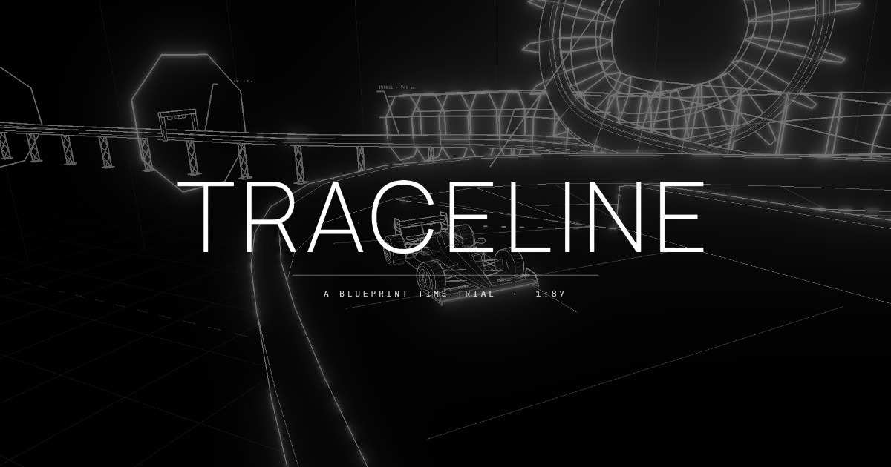

Carreras contrarreloj a escala 1:87 dibujadas como un plano técnico. Circuitos que se transforman en plena carrera. Segundo side-project de juego, con lenguaje visual radicalmente opuesto a Driftway.

Driftway es velocidad, color y arcade puro. Traceline arranca de la pregunta inversa: ¿cómo se siente un juego que se ve como un diagrama técnico? Carreras cortas, línea limpia, estética de plano constructivo. La restricción visual define el resto: cámara superior, trazos monoespaciados, HUD con telemetría tipo G lateral y bank angle.
La escala HO (1:87) es el estándar de modelismo ferroviario. Trae connotaciones de precisión, miniatura, taller. Traceline toma esa cita visual: autos y pistas se dibujan como si fueran impresas en una lámina técnica, no renderizadas para una pantalla gaming. El marco cambia la lectura del gameplay — ya no es velocidad arcade sino destreza de operación.
La mecánica estrella: el trazado no es fijo. Durante la carrera, segmentos aparecen, desaparecen o rotan a tiempo con la música. El jugador memoriza patrones, no una pista. Esto desarma la ventaja del "yo ya me la sé" y empuja a lectura en tiempo real.
La transformación de pista no es aleatoria. Cada circuito tiene un loop rítmico que se puede aprender — pero el jugador tiene que escuchar y mirar al mismo tiempo. Es la diferencia entre memorizar un mapa estático y aprender a leer una partitura en vivo.
El motor de física del auto (G lateral, bank, deriva) está sintonizado. La cámara superior con trazo técnico renderiza bien. En trabajo activo: el sistema procedural de circuitos que se transforman al compás, y la calibración de dificultad.
Se puede probar la física y el render blueprint. El generador procedural de circuitos todavía está en iteración, así que el gameplay largo aún no se parece al producto final.
Preview Traceline ↗